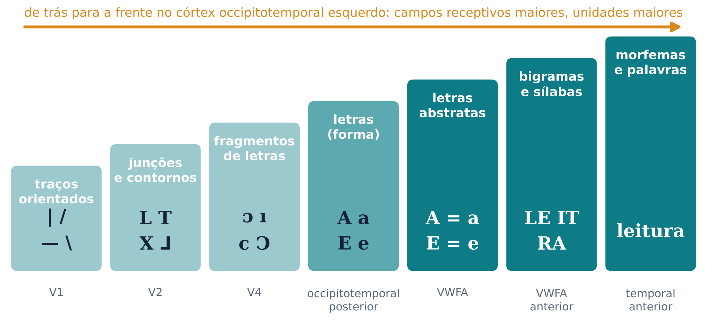
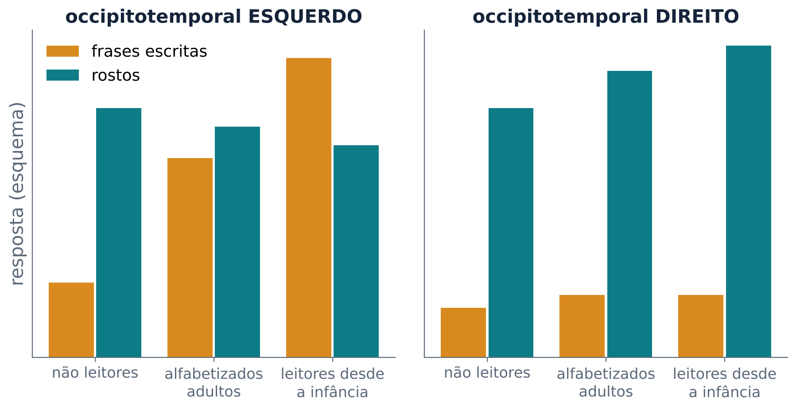
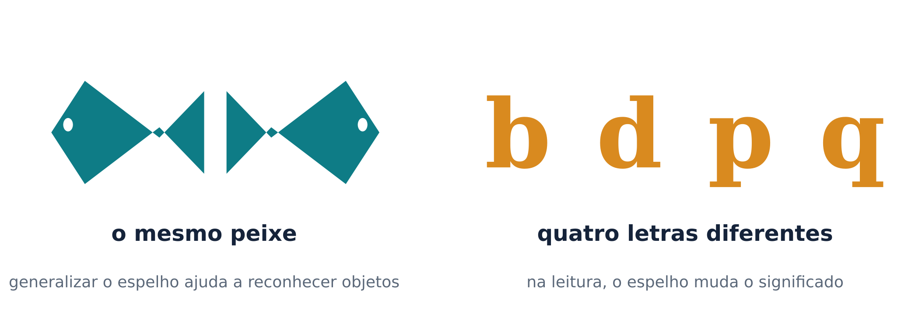
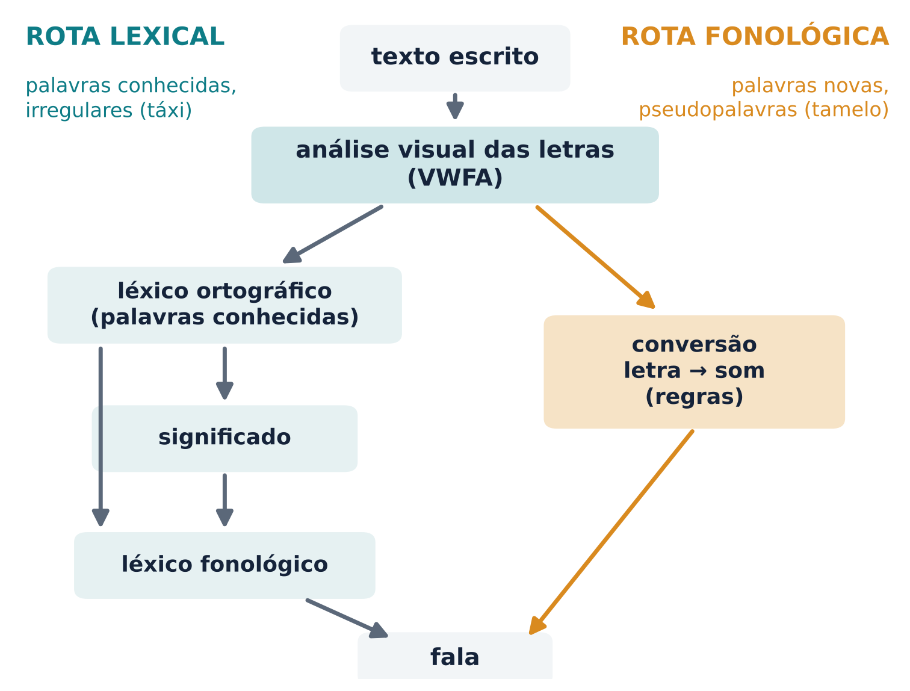
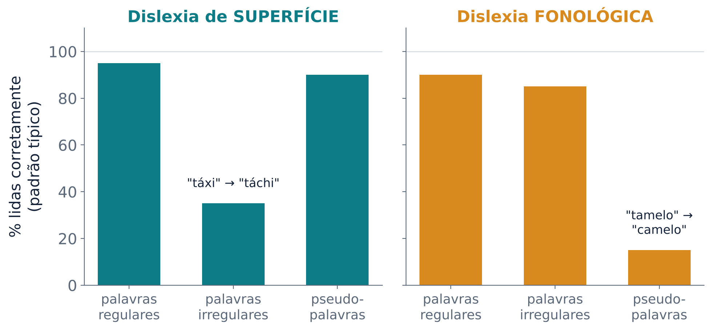

Como um cérebro que evoluiu sem escrita aprende a ler, e o que acontece quando a leitura falha
Falar é universal. Toda criança que cresce ouvindo uma língua aprende a falar sem aulas. Ler é diferente. A escrita foi inventada há cerca de 6 mil anos, e a leitura só se tornou uma habilidade comum a grande parte das pessoas há menos de 200 anos (Andrews; Reichle, 2019). A escrita não sofreu pressão evolutiva, e por isso a leitura precisa usar regiões do cérebro que já existiam para outras funções, como a linguagem falada e o reconhecimento de objetos (Eden et al., 2016). Alguns pesquisadores chegaram a chamar aprender a ler de “um ato não natural” (Andrews; Reichle, 2019).
Aqui aparece um paradoxo. Se não existe um circuito próprio para a leitura, seria de esperar que cada pessoa lesse com um pedaço diferente do cérebro. Não é o que acontece. Em leitores fluentes, palavras escritas ativam a mesma pequena região do córtex visual do hemisfério esquerdo, em línguas tão diferentes quanto o inglês e o chinês (Andrews; Reichle, 2019). Stanislas Dehaene e Laurent Cohen chamaram de paradoxal essa constância de um mapa cerebral para uma invenção cultural, e propuseram uma resposta: a reciclagem neuronal, que é o fio condutor desta aula (Dehaene; Cohen, 2007).
Quando você lê esta linha, tem a impressão de que os olhos deslizam de forma contínua. Não é assim. Os olhos param por 200 a 250 milissegundos, em média (uma fixação), e então saltam para a frente (uma sacada), em média uns 8 caracteres. Durante o salto, nenhuma informação útil é extraída (Andrews; Reichle, 2019).
O motivo dos saltos está na retina. Só a fóvea, a região central da retina, enxerga com nitidez suficiente para distinguir letras. Em cada fixação, apenas uns 7 a 8 caracteres caem nessa região de alta acuidade (Andrews; Reichle, 2019). O que fica um pouco mais longe, na parafóvea, é visto de forma mais grosseira. Mesmo assim, essa visão grosseira é útil: ela ajuda a decidir para onde o olho vai saltar e já adianta parte do reconhecimento da próxima palavra. Quando um experimento limita artificialmente o leitor à visão da fóvea, a velocidade e a precisão da compreensão caem muito (Andrews; Reichle, 2019).
Há um segundo limite, além da nitidez. Fora da fóvea, letras vizinhas atrapalham o reconhecimento umas das outras. Esse fenômeno se chama aglomeração visual (em inglês, crowding): é um efeito perceptivo que prejudica o reconhecimento das letras e depende do espaçamento entre elas (Zorzi et al., 2012). Bouma (1970) estudou essas interações no reconhecimento de letras na parafóvea, e a regra que leva o seu nome diz que a distância necessária para escapar da interferência dos vizinhos cresce com a distância entre a letra e o ponto fixado (Chanceaux; Grainger, 2013). Você mediu esse efeito no experimento 4.
Reconhecer um rosto, uma cadeira ou uma letra é tarefa da via visual ventral, que vai do córtex occipital (na nuca) até a face inferior do lobo temporal. Ler é um caso extremo desse problema: as letras são pequenas, muito parecidas entre si (“rn” e “m”, “c” e “e”) e precisam ser reconhecidas em frações de segundo. Por isso o código neural das palavras precisa ser abstrato, já que reconhecemos uma palavra em qualquer posição, fonte e tamanho, e ao mesmo tempo muito sensível à identidade e à ordem das letras (Dehaene et al., 2005).
Em leitores, uma região dessa via responde de forma especial às palavras escritas. Ela fica no córtex occipitotemporal ventral esquerdo, na porção média do giro fusiforme esquerdo, e recebeu o nome de área da forma visual das palavras (em inglês, visual word form area, VWFA) (Cohen et al., 2000; Eden et al., 2016). Um estudo clássico apresentou palavras ora no lado esquerdo, ora no lado direito do campo visual. As áreas visuais iniciais (provavelmente a área V4) responderam no hemisfério oposto ao lado da palavra, como esperado. A VWFA esquerda respondeu da mesma forma aos dois lados. Em dois pacientes com lesão na parte posterior do corpo caloso (o feixe de fibras que liga os dois hemisférios), a VWFA só era ativada por palavras do lado direito do campo visual: a informação do outro lado não conseguia atravessar (Cohen et al., 2000). Uma meta-análise de estudos em inglês e outras línguas europeias, em chinês e em japonês encontrou uma rede comum de leitura, com algumas diferenças entre os sistemas de escrita; a VWFA teve localização “notavelmente consistente” em todos eles (Bolger; Perfetti; Schneider, 2005).
O nome “área da forma visual das palavras” gerou debate. Price e Devlin (2003) mostraram que a mesma região é ativada em tarefas que não envolvem palavras escritas, como nomear cores e figuras, ler em braile e repetir palavras ouvidas, e argumentaram que é enganoso chamá-la de área das palavras. Do outro lado, a constância da sua localização entre pessoas e sistemas de escrita sugere um sistema cortical ajustado pela experiência com palavras escritas (Andrews; Reichle, 2019). Uma forma de conciliar os lados, apoiada pelos estudos com crianças da seção 3: a região se especializa para a escrita, mas não trabalha só para ela.
Como uma sequência de traços vira uma palavra? Há forte consenso entre as teorias atuais de que o reconhecimento é hierárquico: traços simples (uma barra horizontal) ativam letras, letras podem ativar unidades maiores (como sílabas e morfemas) e, por fim, a forma escrita de uma palavra conhecida, guardada num léxico ortográfico (o “dicionário” das formas escritas que você conhece) (Rastle, 2016). Dehaene e colegas propuseram que essa hierarquia corresponde a uma sequência de regiões no caminho occipitotemporal: uma hierarquia de “detectores de combinações locais”, cada um sensível a fragmentos cada vez maiores das palavras (Dehaene et al., 2005) (Figura 1). Em leitores típicos, crianças e adultos, a preferência por palavras em comparação com sequências de símbolos falsos cresce de trás para a frente no córtex occipitotemporal esquerdo. Em crianças com dislexia, esse gradiente aparece alterado (Eden et al., 2016).

Dois detalhes dessa hierarquia ajudam a entender o laboratório. O primeiro é que os leitores representam letras abstratas: “A” e “a” não se parecem, mas ativam a mesma letra, independentemente da fonte, do tamanho, da caixa, da cor ou da posição na retina (Rastle, 2016). Por isso o texto em maiúsculas alternadas do experimento 2 custa pouco.
O segundo é que o código da posição das letras é aproximado. Se o cérebro guardasse cada letra numa “casinha” fixa (primeira, segunda, terceira…), duas sequências que mudam as mesmas duas posições de uma palavra estariam igualmente distantes dela. Compare CADRENO (o E e o R de CADERNO trocaram de lugar) com CADFVNO (o E e o R foram substituídos por F e V). As duas mudam a quarta e a quinta posições, mas CADRENO lembra muito mais CADERNO. Em experimentos de pré-ativação mascarada (masked priming), uma sequência aparece rápido demais para ser percebida conscientemente e logo depois vem a palavra-alvo. Uma sequência com letras trocadas acelera o reconhecimento da palavra mais do que uma sequência com letras substituídas, mesmo quando as letras trocadas não são vizinhas: caniso ajuda a reconhecer CASINO (Perea; Lupker, 2004; Rastle, 2016). Curiosamente, esse efeito não é universal: em hebraico, uma escrita em que muitas palavras diferentes compartilham as mesmas letras, ele não aparece (Rastle, 2016).
Em 1969, Reicher mostrou algo surpreendente. Uma sequência de letras aparecia por um instante e era coberta por uma máscara. Depois, a pessoa escolhia qual de duas letras tinha aparecido numa posição. A letra era identificada muito melhor quando fazia parte de uma palavra do que quando fazia parte de uma sequência sem sentido (Reicher, 1969; Rastle, 2016). É o efeito de superioridade da palavra. Um benefício parecido aparece para pseudopalavras pronunciáveis (TARK em comparação com ATRK, no inglês) (Rastle, 2016).
O modelo de ativação interativa explica esse resultado com informação que circula nos dois sentidos. Traços ativam letras, letras ativam palavras, e as palavras ativadas devolvem ativação às suas letras (McClelland; Rumelhart, 1981). Assim, o conhecimento de “cima” (as palavras que você conhece) melhora a percepção de “baixo” (as letras). Esse modelo e as suas variantes ainda são a base das teorias de reconhecimento visual de palavras (Rastle, 2016). Você testou essa ideia no experimento 1.
Ler não é “fotografar” palavras inteiras pelo contorno. É montar a palavra a partir das letras, numa hierarquia em que o conhecimento das palavras ajuda a ver as letras. As letras são abstratas (A = a) e a posição delas é codificada de forma aproximada.
A hipótese da reciclagem neuronal propõe que invenções culturais recentes demais para terem influenciado a evolução da nossa espécie, como a leitura e a aritmética, “invadem” circuitos cerebrais evolutivamente mais antigos e herdam muitas das restrições estruturais desses circuitos (Dehaene; Cohen, 2007). Para a leitura, o circuito reciclado é a parte da via ventral que reconhece formas visuais.
Se a hipótese estiver certa, aprender a ler deveria mudar a resposta dessa região. Dehaene e colegas (2010) testaram a ideia com 63 adultos de Portugal e do Brasil: 10 não sabiam ler, 22 se alfabetizaram já adultos e 31 aprenderam a ler na infância. A ativação do fusiforme esquerdo por frases escritas cresceu fortemente com o desempenho em leitura, inclusive em quem aprendeu a ler adulto. No mesmo ponto, apareceu uma pequena competição com os rostos: a resposta a rostos diminuiu com a alfabetização, enquanto no fusiforme direito ela aumentou. A alfabetização também melhorou a resposta de áreas visuais iniciais, até a área V1, a padrões horizontais, e aumentou a ativação à fala numa região auditiva, o plano temporal (Dehaene et al., 2010) (Figura 2).

Estudos com crianças acompanhadas ao longo da alfabetização mostram como isso acontece. Dez crianças de 6 anos fizeram ressonância magnética funcional 6 ou 7 vezes, antes e durante o primeiro ano escolar. Respostas específicas a palavras escritas surgiram no local da VWFA nos primeiros meses de escola, junto com o salto na leitura. Os pontos do córtex que se tornaram VWFA eram, antes da alfabetização, pouco especializados (respondiam um pouco a ferramentas) e ficavam perto, mas separados, dos pontos que respondem a rostos. As respostas às outras categorias ficaram quase estáveis (Dehaene-Lambertz; Monzalvo; Dehaene, 2018). A leitura parece ocupar um terreno ainda pouco comprometido, em vez de expulsar os rostos. E por que exatamente ali? A resposta parece estar nas conexões. Em crianças examinadas aos 5 anos, antes de aprender a ler, e de novo aos 8, o local onde a VWFA apareceu aos 8 pôde ser previsto pelo padrão de conexões daquele ponto com o resto do cérebro aos 5, mas não pelas suas respostas funcionais (Saygin et al., 2016).
Se a leitura recicla um sistema antigo, parte dela deveria existir em outros primatas. Grainger e colegas (2012) treinaram babuínos a separar palavras inglesas de quatro letras de sequências parecidas que não eram palavras. Os animais, que não têm linguagem, aprenderam a tarefa usando informação sobre quais letras aparecem onde, e trataram palavras nunca vistas como palavras com mais frequência do que as não palavras. O desempenho acompanhou a frequência dos pares de letras nas palavras (Grainger et al., 2012). A parte visual da leitura, portanto, pode ser adquirida sem linguagem; ligar as formas aos sons e significados é outra história.
O sistema visual tende a tratar um objeto e a sua imagem no espelho como a mesma coisa. Para reconhecer objetos, isso é útil: um peixe nadando para a esquerda ou para a direita é o mesmo peixe. Para a leitura, essa generalização em espelho é um problema, porque “b” e “d”, ou “p” e “q”, são letras diferentes (Figura 3). Kolinsky e colegas (2011) compararam adultos analfabetos com leitores do alfabeto latino, incluindo pessoas alfabetizadas já adultas. Os analfabetos mostraram alguma sensibilidade às diferenças de espelho, mas foram muito piores que todos os outros grupos quando a tarefa exigia prestar atenção a elas. A conclusão dos autores é que aprender uma escrita com letras espelhadas leva o leitor iniciante a “quebrar” a invariância ao espelho típica do sistema visual, e que isso vale também para figuras que não são letras (Kolinsky et al., 2011). É por isso que o texto espelhado do experimento 2 é tão difícil.

Leia em voz alta: “táxi”, “casa”, “tamelo”. A primeira é uma palavra conhecida com uma pronúncia que a regra mais comum não prevê (o “x” tem som de “ks”). A segunda é conhecida e regular. A terceira não existe, mas você a leu sem dificuldade. Como um mesmo sistema faz as três coisas?
O modelo de dupla rota propõe caminhos que funcionam em paralelo (Coltheart et al., 2001; Coslett; Turkeltaub, 2016) (Figura 4):
Na versão computacional, chamada DRC (do inglês dual route cascaded), a informação flui pelas rotas em cascata, e as duas interagem (Rastle, 2016; Coslett; Turkeltaub, 2016). O modelo reproduz muitos efeitos da leitura normal, como os de frequência, regularidade e comprimento (Coltheart et al., 2001; Coslett; Turkeltaub, 2016). Palavras regulares conhecidas podem ser lidas pelas duas rotas.

Há uma alternativa importante. O modelo do triângulo, um modelo conexionista, usa uma única rede que liga três tipos de representação (ortografia, fonologia e significado), sem regras explícitas e sem uma lista de palavras: o conhecimento fica distribuído nas conexões, aprendidas com a experiência (Coslett; Turkeltaub, 2016; Andrews; Reichle, 2019). Os dois tipos de modelo simulam boa parte dos dados, às vezes por razões diferentes, e ainda se discute qual deles reproduz melhor os padrões dos pacientes (Andrews; Reichle, 2019; Coslett; Turkeltaub, 2016). Para esta aula, a versão de duas rotas é uma boa forma de organizar os fatos.
E o português? As ortografias variam muito. Nas ortografias “rasas”, como o finlandês, as letras correspondem diretamente aos sons; nas “profundas”, como o inglês, a correspondência é inconsistente e depende do contexto (Andrews; Reichle, 2019). Para ler, o português é bem mais regular que o inglês, mas tem exceções, como as várias leituras do “x” (xícara, táxi, exame, próximo) e o timbre aberto ou fechado de “e” e “o” sem acento (olho, molho). Para escrever, é menos regular (sessão, seção, cessão). Num estudo em 12 países europeus, na maioria deles as crianças já liam com precisão e fluência no fim do primeiro ano escolar. As exceções foram o francês, o português (de Portugal), o dinamarquês e, sobretudo, o inglês, em que o desenvolvimento foi mais de duas vezes mais lento que nas ortografias rasas. Os autores atribuem as diferenças à profundidade ortográfica e à complexidade das sílabas da língua (Seymour; Aro; Erskine, 2003).
O estudo de pessoas que perderam a capacidade de ler depois de uma lesão cerebral, as dislexias adquiridas, começou no fim do século XIX, com o neurologista francês Joseph Dejerine (Coslett; Turkeltaub, 2016).
Na dislexia fonológica, descrita em 1979, o procedimento que converte letras em sons está prejudicado. O paciente lê bem a maioria das palavras conhecidas (85 a 95% em alguns casos), regulares ou irregulares, mas tem enorme dificuldade com pseudopalavras, que muitas vezes transforma em palavras parecidas (“tamelo” vira “camelo”). Ela aparece com lesões em várias regiões ao redor do sulco lateral do hemisfério esquerdo (região perissilviana), em especial o temporal superior e os giros angular e supramarginal, e às vezes o frontal inferior (Coslett; Turkeltaub, 2016).
Na dislexia de superfície, acontece o contrário. A pessoa lê bem palavras regulares e pseudopalavras, mas erra as irregulares, lendo-as “pela regra”, sobretudo as pouco frequentes. Em português, seria ler “táxi” como “táchi”. Ela é rara após lesões focais e aparece sobretudo em doenças degenerativas. É característica da demência semântica, em que a pessoa perde aos poucos o conhecimento sobre o mundo, com atrofia do lobo temporal esquerdo; a atrofia do temporal anterior se associa aos erros com palavras irregulares (Coslett; Turkeltaub, 2016).
Quando uma lesão prejudica a capacidade A e poupa a B, e outra lesão faz o contrário, fala-se em dupla dissociação. É o argumento clássico de que as duas capacidades dependem de mecanismos ao menos em parte separados. Foi com base em padrões como esses que Marshall e Newcombe concluíram, em 1973, que a pronúncia de palavras escritas pode ser obtida por dois procedimentos distintos (Coslett; Turkeltaub, 2016) (Figura 5). Existe ainda a dislexia profunda, em que, além da falha grave com pseudopalavras, o paciente comete erros de significado (ler “castelo” como “cavaleiro”) e lê melhor palavras concretas, fáceis de imaginar, do que abstratas (Coslett; Turkeltaub, 2016).

Em 1892, Dejerine descreveu um paciente que não conseguia ler, nem em voz alta nem para compreender, mas continuava a escrever muito bem. Como outros pacientes descritos depois, ele não conseguia ler o que ele mesmo tinha escrito (Coslett; Turkeltaub, 2016). Esse quadro se chama alexia pura ou alexia sem agrafia.
Dejerine o explicou como uma desconexão com duas partes. Uma lesão posterior esquerda priva o hemisfério esquerdo da informação visual. Uma segunda lesão, no esplênio do corpo caloso (a parte de trás desse feixe), impede que a informação vista pelo hemisfério direito chegue às estruturas do hemisfério esquerdo que reconhecem palavras, que para Dejerine ficavam no giro angular (Coslett; Turkeltaub, 2016). Hoje se sabe que a lesão da própria VWFA também pode causar alexia pura. Na maioria dos casos descritos, as fibras vizinhas também podem ter sido atingidas, mas num deles o AVC ficou restrito ao córtex. Em outro caso, uma cirurgia que lesou as fibras que levam informação à VWFA, poupando a própria área, também causou dislexia, o que apoia a explicação de Dejerine. Uma hipótese razoável é que tanto a desconexão quanto a lesão direta da região possam causar o quadro (Coslett; Turkeltaub, 2016).
Muitos desses pacientes leem soletrando as letras uma a uma, “letra por letra”. A assinatura é o efeito de comprimento: palavras longas levam mais tempo para ser lidas do que as curtas (Coslett; Turkeltaub, 2016).
A dislexia do desenvolvimento é uma dificuldade em reconhecer palavras escritas com precisão e/ou fluência, com escrita (ortografia) e decodificação ruins. Ela é inesperada diante das outras capacidades cognitivas da pessoa e de um ensino adequado (Eden et al., 2016). Ou seja, não é falta de inteligência nem de esforço. É o transtorno de aprendizagem mais comum. Estima-se que afete de 5% a 12% da população de língua inglesa, com taxas um pouco menores em outras línguas e sistemas de escrita, e é de duas a três vezes mais frequente em meninos (Eden et al., 2016). Tem forte componente hereditário: estima-se uma chance de 30% a 50% de ser passada de pai ou mãe para filho, e vários genes candidatos já foram identificados (Eden et al., 2016).
A explicação mais aceita é um déficit fonológico: uma dificuldade em perceber, segmentar e manipular os sons da fala, que atrapalha a ligação entre letras e sons. Ele aparece em três medidas: a consciência fonológica (por exemplo, dizer como fica “prato” sem o “r”), a nomeação rápida (nomear depressa uma série de letras ou números) e a memória verbal de curto prazo (Eden et al., 2016). Quatro evidências sugerem que a consciência fonológica fraca é causa, e não só consequência, da dislexia: ela prevê a leitura futura; já aparece na pré-escola; é encontrada mesmo quando se compara a criança disléxica com crianças mais novas que leem no mesmo nível; e treiná-la costuma melhorar a decodificação (Eden et al., 2016). Esse déficit provavelmente não explica tudo, e existem outras teorias, ligadas à percepção auditiva, ao tempo motor, ao cerebelo e a vias visuais (Eden et al., 2016).
No cérebro, a leitura depende de uma rede do hemisfério esquerdo com três partes: o córtex occipitotemporal ventral (onde fica a VWFA), o córtex temporoparietal e o frontal inferior. Meta-análises encontram em pessoas com dislexia menos atividade nas regiões occipitotemporal e temporoparietal esquerdas, além de diferenças na substância branca temporoparietal esquerda, onde passam fibras que ligam as regiões posteriores às frontais (Eden et al., 2016).
Cuidado com causa e efeito. Ler muda o cérebro, e quem tem dislexia lê menos. Parte das diferenças cerebrais pode ser consequência de ler menos, e não a causa da dislexia. Por isso os melhores estudos acompanham crianças antes da alfabetização ou comparam crianças disléxicas com crianças mais novas que leem no mesmo nível. Num estudo desse tipo, poucas das diferenças de anatomia encontradas na comparação com crianças da mesma idade continuaram aparecendo na comparação com crianças do mesmo nível de leitura (Eden et al., 2016).
A ortografia da língua muda o modo como a dislexia aparece. Em alemão, em que a correspondência entre letras e sons é muito consistente, a dislexia aparece sobretudo como leitura lenta e problemas de escrita (Eden et al., 2016). Em inglês, os erros de leitura são mais marcantes. Paulesu e colegas (2001) compararam disléxicos italianos, franceses e ingleses. Os italianos, que usam uma ortografia rasa, leram melhor que os outros, mas todos tiveram o mesmo prejuízo em tarefas fonológicas em relação aos seus controles. Durante a leitura, os três grupos mostraram a mesma redução de atividade numa região temporal do hemisfério esquerdo. A conclusão dos autores: a dislexia tem uma base neurocognitiva universal, e as diferenças entre países vêm das ortografias (Paulesu et al., 2001).
Intervenções que treinam a consciência fonológica e a ligação entre letras e sons costumam trazer ganhos na decodificação (Eden et al., 2016). O cérebro muda junto. Uma meta-análise de estudos de neuroimagem de intervenção encontrou, depois do treino, aumento de atividade no tálamo esquerdo, no frontal inferior esquerdo e direito (junto à ínsula), no occipital médio esquerdo e no cíngulo posterior direito; os autores pedem cautela, porque os estudos são poucos e os métodos variam (Barquero; Davis; Cutting, 2014). Esses aumentos são discutidos como “normalização” ou “compensação” (outras regiões assumem parte do trabalho) (Eden et al., 2016). Algumas crianças com dislexia também sofrem mais com a aglomeração visual. Num grande grupo de crianças italianas e francesas com dislexia, simplesmente aumentar o espaçamento entre as letras melhorou a leitura de textos na hora, sem treino (Zorzi et al., 2012).
Os experimentos tinham poucas tentativas por condição; o resultado individual varia, e o que importa é o padrão da turma.
Experimento 1 (palavra relâmpago). Você viu quatro letras por uma fração de segundo e escolheu qual de duas letras estava numa posição. As duas opções formavam palavras (CASA/CAMA), então adivinhar a palavra não ajudava. O esperado é acertar mais quando as letras formam uma palavra do que quando estão embaralhadas, e muitas vezes até mais do que quando a letra aparece sozinha. É o efeito de superioridade da palavra (Reicher, 1969), explicado pela ativação que volta das palavras para as letras (McClelland; Rumelhart, 1981).
Experimento 2 (textos estranhos). Cada formato testa uma propriedade da leitura. As maiúsculas alternadas costumam custar pouco, porque o sistema representa letras abstratas (Rastle, 2016). O texto espelhado costuma ser o mais lento, porque o leitor precisou “quebrar” a generalização em espelho para as letras (Kolinsky et al., 2011). As letras embaralhadas custam tempo. O famoso texto segundo o qual “uma pesquisa de Cambridge” mostrou que a ordem das letras não importa é um boato: essa pesquisa não existiu. Com rastreamento dos olhos, Rayner e colegas (2006) mostraram que há sempre um custo. Trocar letras do meio das palavras deixou a leitura 12% mais lenta; trocar letras do fim, 26%; e trocar letras do início, 36% (Rayner et al., 2006).
Experimento 3 (é palavra?). O esperado é que as letras trocadas (CADRENO) enganem mais e sejam rejeitadas mais devagar do que as substituídas, porque o código de posição das letras é aproximado (Perea; Lupker, 2004; Rastle, 2016).
Experimento 4 (visão de canto). Com os olhos fixos no ponto, a letra sozinha deve ser reconhecida bem e a letra cercada de vizinhos próximos, bem pior. Se os vizinhos ficam afastados, o reconhecimento melhora. É a aglomeração visual (Bouma, 1970; Zorzi et al., 2012). Não é falta de nitidez: a letra sozinha, do mesmo tamanho e no mesmo lugar, é vista. Se você moveu os olhos, a diferença pode ter sumido.
Experimento 5 (duas rotas). As pseudopalavras devem ter sido lidas mais devagar que as palavras. Pelo modelo de duas rotas, palavras conhecidas podem usar a rota lexical, enquanto pseudopalavras só podem ser lidas pela rota não lexical, que aplica regras em série (Coltheart et al., 2001; Coslett; Turkeltaub, 2016). Se a conversão é feita pedaço por pedaço, é de esperar que o comprimento pese mais nas pseudopalavras do que nas palavras. A medida é grosseira (inclui o tempo de tocar na tela), então compare o padrão, não os números exatos.
Por que a leitura é chamada de invenção cultural, e o que é o “paradoxo da leitura”?
Resposta
A escrita tem cerca de 6 mil anos e a leitura em massa menos de 200, tempo curto demais para a evolução criar um circuito próprio; por isso ler exige ensino explícito. O paradoxo é que, mesmo assim, os leitores fluentes usam a mesma pequena região do córtex occipitotemporal esquerdo, em escritas muito diferentes. A hipótese da reciclagem neuronal propõe uma resposta: a leitura ocupa um pedaço da via visual ventral que já existia.
Se a fóvea enxerga só uns 7 a 8 caracteres por vez, por que a visão fora dela não é inútil na leitura?
Resposta
A informação mais grosseira da parafóvea ajuda a decidir para onde o olho vai saltar e já adianta parte do reconhecimento da próxima palavra. Quando um experimento limita o leitor à fóvea, a leitura e a compreensão pioram muito. Mas, por causa da nitidez menor e da aglomeração visual, a identificação precisa das letras exige trazer a palavra até a fóvea.
CADRENO e CADFVNO mudam as mesmas duas posições de CADERNO. Por que a primeira engana mais, e o que isso diz sobre o código das letras?
Resposta
CADRENO conserva todas as letras de CADERNO, só que duas delas em posições trocadas. Se o cérebro codificasse cada letra numa posição fixa, as duas sequências estariam igualmente distantes da palavra. Como a versão com letras trocadas ativa muito mais a palavra original, conclui-se que o código de posição das letras é aproximado.
No estudo com adultos brasileiros e portugueses, o que mudou no cérebro com a alfabetização, e por que esse resultado apoia a reciclagem neuronal?
Resposta
A ativação do fusiforme esquerdo por frases escritas cresceu com o desempenho em leitura, mesmo em quem aprendeu a ler adulto, e a resposta a rostos no mesmo ponto diminuiu um pouco. Isso mostra que uma região já usada para reconhecer formas visuais foi parcialmente reaproveitada para a escrita, como prevê a hipótese.
Um paciente lê “táxi” como “táchi”, mas lê bem “tamelo”. Outro lê “táxi” corretamente, mas transforma “tamelo” em “camelo”. Qual rota está prejudicada em cada um?
Resposta
O primeiro tem dislexia de superfície: a rota lexical falha e ele lê pela regra, o que só erra as palavras irregulares. O segundo tem dislexia fonológica: a conversão letra-som falha, então ele lê palavras conhecidas pela rota lexical, mas não consegue ler pseudopalavras e as transforma em palavras parecidas. Juntos, os dois formam uma dupla dissociação.
Como alguém com alexia pura pode escrever uma carta e não conseguir lê-la?
Resposta
A linguagem e a escrita estão preservadas; o que falha é a chegada da forma visual das palavras ao sistema que as reconhece, por desconexão entre o córtex visual e a VWFA ou por lesão da própria região. O paciente passa a ler letra por letra, e palavras mais longas levam mais tempo.
Por que disléxicos italianos podem ler com mais precisão que disléxicos ingleses, se a base neural parece ser a mesma?
Resposta
O núcleo da dislexia é fonológico, e os disléxicos dos três países estudados mostraram o mesmo prejuízo fonológico e a mesma redução de atividade temporal esquerda. No italiano, as correspondências entre letras e sons são regulares, então a conversão letra-som acaba acertando, ainda que devagar. No inglês, a ortografia é profunda e a regra falha com frequência, de modo que os erros aparecem mais.
Uma pesquisa mostra menos atividade temporoparietal esquerda em adultos com dislexia. Por que isso não prova que essa diferença causou a dislexia?
Resposta
Ler muda o cérebro, e pessoas com dislexia leem menos. A diferença pode ser consequência da menor experiência com a leitura. Para separar causa e efeito, é preciso estudar crianças antes da alfabetização ou comparar disléxicos com crianças mais novas que leem no mesmo nível.
ANDREWS, S.; REICHLE, E. D. The cognitive architecture of reading: the organization of an acquired skill. In: HAGOORT, P. (org.). Human language: from genes and brains to behavior. Cambridge, MA: MIT Press, 2019. p. 51-66.
BARQUERO, L. A.; DAVIS, N.; CUTTING, L. E. Neuroimaging of reading intervention: a systematic review and activation likelihood estimate meta-analysis. PLoS ONE, v. 9, n. 1, e83668, 2014. DOI: https://doi.org/10.1371/journal.pone.0083668.
BOLGER, D. J.; PERFETTI, C. A.; SCHNEIDER, W. Cross-cultural effect on the brain revisited: universal structures plus writing system variation. Human Brain Mapping, v. 25, n. 1, p. 92-104, 2005. DOI: https://doi.org/10.1002/hbm.20124.
BOUMA, H. Interaction effects in parafoveal letter recognition. Nature, v. 226, n. 5241, p. 177-178, 1970. DOI: https://doi.org/10.1038/226177a0.
CHANCEAUX, M.; GRAINGER, J. Constraints on letter-in-string identification in peripheral vision: effects of number of flankers and deployment of attention. Frontiers in Psychology, v. 4, 119, 2013. DOI: https://doi.org/10.3389/fpsyg.2013.00119.
COHEN, L. et al. The visual word form area: spatial and temporal characterization of an initial stage of reading in normal subjects and posterior split-brain patients. Brain, v. 123, n. 2, p. 291-307, 2000. DOI: https://doi.org/10.1093/brain/123.2.291.
COLTHEART, M. et al. DRC: a dual route cascaded model of visual word recognition and reading aloud. Psychological Review, v. 108, n. 1, p. 204-256, 2001. DOI: https://doi.org/10.1037/0033-295X.108.1.204.
COSLETT, H. B.; TURKELTAUB, P. Acquired dyslexia. In: HICKOK, G.; SMALL, S. L. (org.). Neurobiology of language. London: Academic Press, 2016. p. 791-803. DOI: https://doi.org/10.1016/B978-0-12-407794-2.00063-8.
DEHAENE, S.; COHEN, L. Cultural recycling of cortical maps. Neuron, v. 56, n. 2, p. 384-398, 2007. DOI: https://doi.org/10.1016/j.neuron.2007.10.004.
DEHAENE, S. et al. The neural code for written words: a proposal. Trends in Cognitive Sciences, v. 9, n. 7, p. 335-341, 2005. DOI: https://doi.org/10.1016/j.tics.2005.05.004.
DEHAENE, S. et al. How learning to read changes the cortical networks for vision and language. Science, v. 330, n. 6009, p. 1359-1364, 2010. DOI: https://doi.org/10.1126/science.1194140.
DEHAENE-LAMBERTZ, G.; MONZALVO, K.; DEHAENE, S. The emergence of the visual word form: longitudinal evolution of category-specific ventral visual areas during reading acquisition. PLoS Biology, v. 16, n. 3, e2004103, 2018. DOI: https://doi.org/10.1371/journal.pbio.2004103.
EDEN, G. F. et al. Developmental dyslexia. In: HICKOK, G.; SMALL, S. L. (org.). Neurobiology of language. London: Academic Press, 2016. p. 815-826. DOI: https://doi.org/10.1016/B978-0-12-407794-2.00065-1.
GRAINGER, J. et al. Orthographic processing in baboons (Papio papio). Science, v. 336, n. 6078, p. 245-248, 2012. DOI: https://doi.org/10.1126/science.1218152.
KOLINSKY, R. et al. Enantiomorphy through the looking glass: literacy effects on mirror-image discrimination. Journal of Experimental Psychology: General, v. 140, n. 2, p. 210-238, 2011. DOI: https://doi.org/10.1037/a0022168.
McCLELLAND, J. L.; RUMELHART, D. E. An interactive activation model of context effects in letter perception: I. An account of basic findings. Psychological Review, v. 88, n. 5, p. 375-407, 1981. DOI: https://doi.org/10.1037/0033-295X.88.5.375.
PAULESU, E. et al. Dyslexia: cultural diversity and biological unity. Science, v. 291, n. 5511, p. 2165-2167, 2001. DOI: https://doi.org/10.1126/science.1057179.
PEREA, M.; LUPKER, S. J. Can CANISO activate CASINO? Transposed-letter similarity effects with nonadjacent letter positions. Journal of Memory and Language, v. 51, n. 2, p. 231-246, 2004. DOI: https://doi.org/10.1016/j.jml.2004.05.005.
PRICE, C. J.; DEVLIN, J. T. The myth of the visual word form area. NeuroImage, v. 19, n. 3, p. 473-481, 2003. DOI: https://doi.org/10.1016/S1053-8119(03)00084-3.
RASTLE, K. Visual word recognition. In: HICKOK, G.; SMALL, S. L. (org.). Neurobiology of language. London: Academic Press, 2016. p. 255-264. DOI: https://doi.org/10.1016/B978-0-12-407794-2.00021-3.
RAYNER, K. et al. Raeding wrods with jubmled lettres: there is a cost. Psychological Science, v. 17, n. 3, p. 192-193, 2006. DOI: https://doi.org/10.1111/j.1467-9280.2006.01684.x.
REICHER, G. M. Perceptual recognition as a function of meaningfulness of stimulus material. Journal of Experimental Psychology, v. 81, n. 2, p. 275-280, 1969. DOI: https://doi.org/10.1037/h0027768.
SAYGIN, Z. M. et al. Connectivity precedes function in the development of the visual word form area. Nature Neuroscience, v. 19, n. 9, p. 1250-1255, 2016. DOI: https://doi.org/10.1038/nn.4354.
SEYMOUR, P. H. K.; ARO, M.; ERSKINE, J. M. Foundation literacy acquisition in European orthographies. British Journal of Psychology, v. 94, n. 2, p. 143-174, 2003. DOI: https://doi.org/10.1348/000712603321661859.
ZORZI, M. et al. Extra-large letter spacing improves reading in dyslexia. Proceedings of the National Academy of Sciences of the United States of America, v. 109, n. 28, p. 11455-11459, 2012. DOI: https://doi.org/10.1073/pnas.1205566109.
Material de estudo da disciplina Bases neurais da comunicação humana (UFRN), Prof. Daniel Y. Takahashi. Texto e figuras elaborados para o curso; as fontes estão nas Referências.